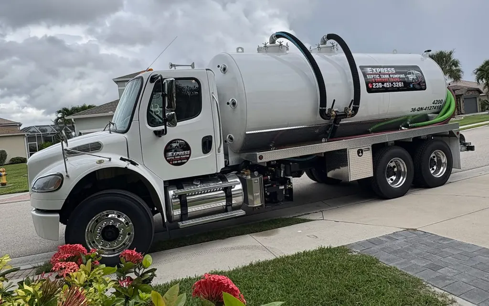
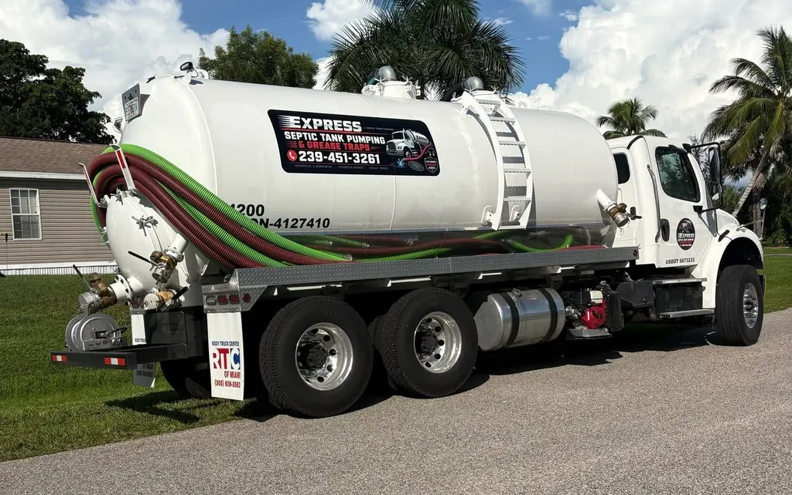
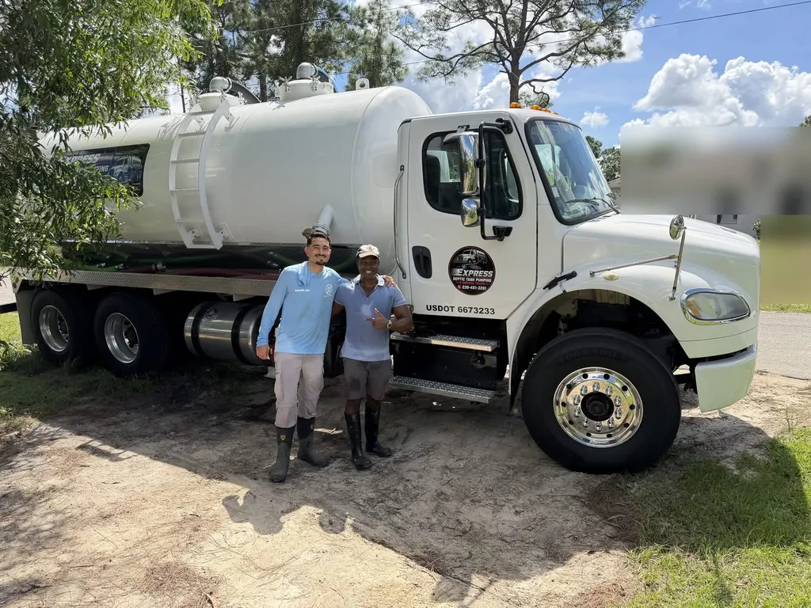

Owner-operated in Estero
Septic tank pumping in Southwest Florida
Call day or night for a backup. For routine pumping, ask about same-day availability.
Residential pumping from $399.99 What affects the price
What we do
Septic pumping for homes. Grease traps for kitchens.
- Residential septic pumpingWe find the lid, pump the tank and tell you what we saw.
- Commercial grease trap serviceFor restaurants and commercial kitchens. One-time or recurring.
- Commercial septic pumpingOffices, rentals, churches and other properties on septic.
- Septic tank risersBring the lid up to ground level so future pump-outs don't need digging. 6-inch risers $299.99 each.
- Septic inspectionsFor buyers, sellers and homeowners.
Residential pumping from $399.99
Your final price depends on tank size, tank access, whether the lid needs locating or digging, and after-hours visits. Locating and digging up a buried lid is $100, plus $50 for each additional hour. Call to confirm the price for your tank.

The truck
4,200 gallons, split tank
The tank is split in two: one side for septic, one side for grease, so the two never mix. Licensed & insured · USDOT 6673233.

The owner
When you call, you're talking to the person who runs the business.
Express is owned and run by ORyan Atkinson, based in Estero. Licensed & insured. Honest, reliable and fair: great customer service is our top priority.
Credentials
Licensed & Experienced
Work performed under Florida Certified Plumbing Contractor Raymond F. Dibble, License #CFC020332, licensed since 1981 (45+ years).
Recent jobs
Completed jobs
Photos and notes from recent work around Southwest Florida.
See completed jobsService area
Lee, Collier & Charlotte County
Based in Estero, between Bonita Springs and Fort Myers. We also cover LaBelle in Hendry County.
- Estero
- Bonita Springs
- Naples
- North Naples
- Fort Myers
- Cape Coral
- Lehigh Acres
- San Carlos Park
- East Naples
- Golden Gate
- Marco Island
- Immokalee
- Ave Maria
- North Fort Myers
- Fort Myers Beach
- Three Oaks
- Gateway
- Alva
- Buckingham
- Sanibel
- Pine Island
- Port Charlotte
- Punta Gorda
- Everglades City
- Golden Gate Estates
- South Fort Myers
- Fort Myers Shores
- Tice
- Corkscrew
- LaBelle
- Charlotte Harbor
- Harbour Heights
Book or call
What do you need?
I'm experiencing a backup
Don't book online. Call now and stop running water until we get there. Day or night.
Call now · (239) 451-3261Routine pumping for my home
Send a request on ServiceM8, the booking system we use. We'll contact you to confirm a time; it isn't booked until we confirm. From $399.99.
Book routine service on ServiceM8 (opens in a new tab) ↗Grease trap for a restaurant or kitchen
One-time pump-outs or a recurring schedule. Call to set it up.
Call (239) 451-3261 Grease trap service
FAQ
Common questions
How much does septic tank pumping cost?
Residential pumping starts at $399.99. Your final price depends on tank size, tank access, whether the lid needs locating or digging, and after-hours visits. Locating and digging up a buried lid is $100, plus $50 for each additional hour. Call (239) 451-3261 to confirm for your tank.
What is a septic tank riser?
A riser is an extension installed on top of the tank's access opening. It brings the lid up to ground level, so future pump-outs don't need digging. Express installs 6-inch risers for $299.99 each. Call (239) 451-3261 to confirm what your tank needs.
How often should I pump my septic tank?
The U.S. EPA recommends pumping most household tanks every 3 to 5 years, depending on tank size, household size and water use.
Do you pump grease traps?
Yes, for restaurants and commercial kitchens, one-time or on a recurring schedule.
Can I book online?
Yes, for routine pumping: send a request on ServiceM8 and we'll contact you to confirm a time. For a backup, call (239) 451-3261 day or night.
Reviews
See what customers say on Google
Our reviews are on our Google Business Profile.
Talk to Express about your tank
Call day or night for a backup. For routine pumping, ask about same-day availability.